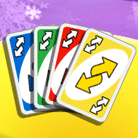
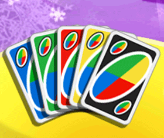
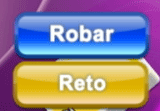

20 |
Cartas |
 |
|
Debes jugar con cartas azules, verdes, amarillas y rojas que tienen un valor de 0 a 9. Son las cartas básicas de la baraja que determinarán el progreso general de la partida. Roba 2 Según las reglas estándar, cada vez que alguien juegue una carta Roba 2, el jugador siguiente deberá robar dos cartas de la baraja y perderá su turno. Si se juega con la opción de Penalizaciones y el jugador anterior juega una carta Roba 2 y tú también tienes una carta Roba 2, podrás ponerla en juego y pasar el turno al siguiente jugador sin ser penalizado. El siguiente jugador recibirá una penalización doble. Si tiene la misma carta, el efecto pasará al siguiente jugador. Hay 8 cartas Roba 2 en total: 2 azules, 2 verdes, 2 rojas y 2 amarillas.
Pierde el turno Cada vez que alguien juegue esta carta, el siguiente jugador es “saltado”, lo que significa que pierde el turno. Hay 8 cartas Pierde el turno en total: 2 azules, 2 verdes, 2 rojas y 2 amarillas.
Cambio de sentido Al jugar esta carta, cambia el sentido de la partida. La partida continuará en la nueva dirección hasta que alguien juegue otra carta Cambio de sentido. Hay 8 cartas Cambio de sentido en total: 2 azules, 2 verdes, 2 rojas y 2 amarillas.  Comodín Se puede jugar un comodín después de una carta de cualquier color. El jugador que la haya jugado puede elegir continuar la partida con cualquiera de los cuatro colores.  Comodín Roba 4 Jugar esta carta no solo permite elegir el color con el que se jugará sino que también obliga al jugador siguiente a robar cuatro cartas de la baraja y perder el turno. Pero el jugador solo la puede usar si no tiene una carta válida que coincida con el color que está en juego. El jugador puede arriesgarse y jugar esta carta aunque tenga una carta del color que está en juego, pero si alguien le reta con éxito, deberá robar cuatro cartas. Nota: Si el jugador tiene una carta que coincida con el número de la pila de descarte o tiene una carta especial (Cambio de Sentido, Pierde el turno, Roba 2), podrá jugar el Comodín Roba 4. Si el jugador tiene un Comodín, es ilegal jugar un Comodín Roba 4.
Si alguien juega un Comodín Roba 4 contra ti, puedes retarle seleccionando Reto, o puedes robar cuatro cartas seleccionando Robar.  |


 |
 |
 |